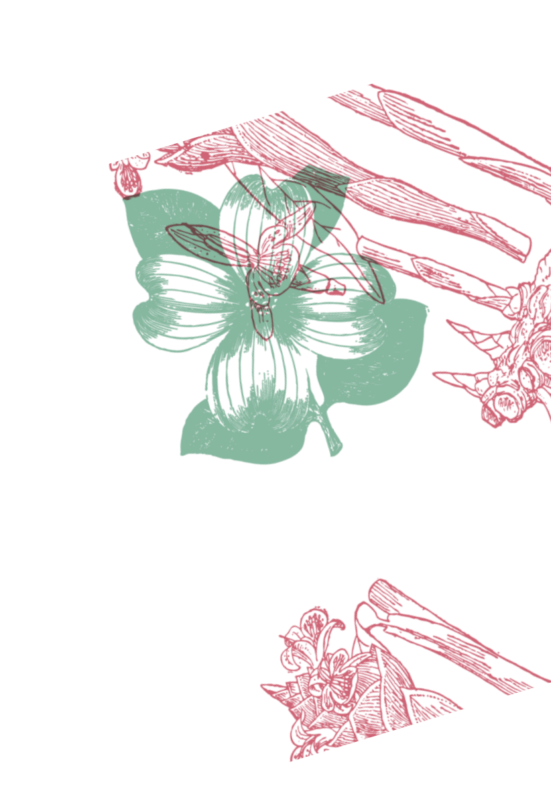

Статьи

В разделе статей нашего медиа-сервиса пользователи имеют возможность узнать гораздо больше
о мире ароматов. Вы получите глубокие знания о различных ароматах, узнаете об их уникальных характеристиках и свойствах.
Кроме того, мы следим за последними тенденциями в мире парфюмерии, чтобы вы всегда оставались в курсе новинок
и популярных трендов.
Статьи
Легендарная сирень
"Легендарная Сирень" - это аромат, воплощающий весеннее пробуждение и свежесть цветущих садов.
Этот аромат начинается с нежных и свежих нот сирени, которые постепенно переходят в богатый, сладковатый цветочный букет.
Аромат "Легендарная Сирень" можно ассоциировать с персонажем из игр, который обладает элегантностью и нежностью,
таким как Zelda из серии игр "The Legend of Zelda".